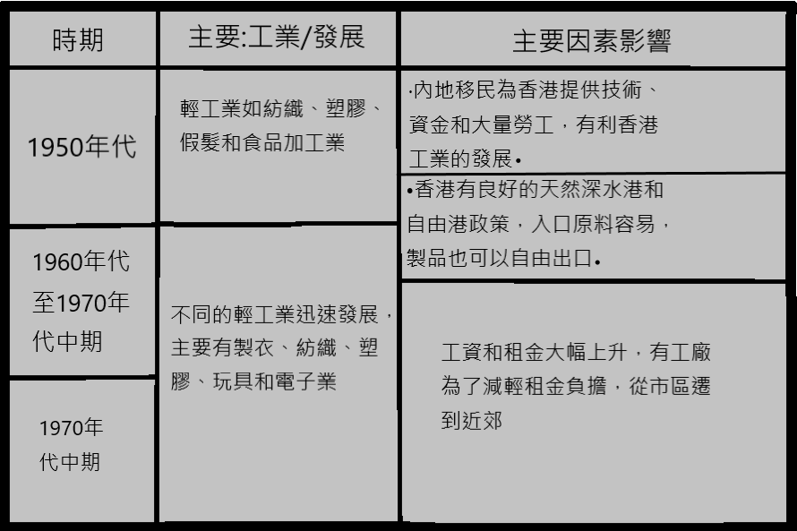
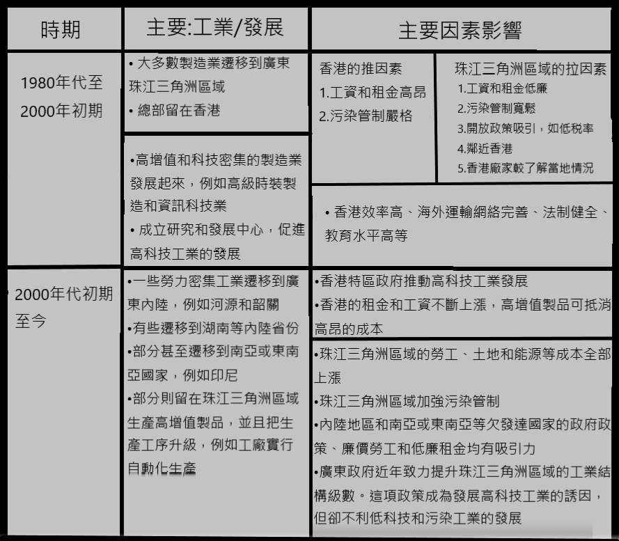

地理 UT範圍:
第六冊:製造業全球轉移
單元 6.1 ~ 6.2
單元 6.1 (什麼是製造業)
1.產業
-產業是經過一連串經濟活動製造出來的,這些活動稱為產業.
-我們可以把產業分為四類:
-我們日常所稱的工業，是指第二產業或製造業:
a.初級產業
•開採和採集天然資源作原料
•例子：採礦、伐木、耕作、捕魚
b.第二產業
•把原料或半製品製成製品
•例子：能源、建築、製造業如紡織、鋼鐵
c.第三產業
•為其他行業或人士提供服務
•例子：零售、公共服務
d.第四產業
•處理資訊和進行不同種類的研究工作
• 例子：科技研究、軟件開發
2.製造業
a.製造業系統
•製造業系統包含投入、過程和產出幾個環節，通常由家廠商管理。賺取的部分金錢會返回系統中，成為投入。
•投入 > 過程 > 產出 > 市場 > 現金 > 部分現金 > 投入。
a1.投入
• 例子：資本,原料,土地,能源,勞工,運輸管理
a2.過程
• 例子：裁縫,紡紗,編織
a3.產出
• 例子：工業廢料,有用製品
製造過程會把一種投人轉化成另一種形式。顧客的製品就是有用的產出，在製造過程中，投入會增值。
b.製造業的區位因素
•製造業廠商會考盧不同的區位因素，例如原料、勞工和市場等，來決定在哪裏生產製品
•不同工業的區位因素不盡相同。
•區位因素包括: 原料,勞工,市場,土地,能源
b1.區位因素例子
• 海產加工業(原料)
-- 魚類和其他海洋物種屬於原料，是易腐的，因此工廠需鄰近原料，以便加工。這是一種原料導向工業。
• 造船業(土地)
-- 這種工業的原料、機器和製品均佔用大片土地。因此，面積龐大的士地是這種工業的重要區位因素。
*更多例子見書第八頁
c.製造業的分類
c1.原料和製品的重量
•輕工業
--使用輕巧的原料
--生產輕便的製品
----例子：電子業
•重工業
--使用笨重的原料
--生產笨重的製品
----例子：飛機製造業
c2.勞工及資本的投入
•勞力密集工業
--生產過程僱用大量勞工
----例子：造鞋業
•資本密集工業
--生產過程投入大量資本
----例子：汽車製造業
c3.科技研究和發展的水平
•低科技工業
--使用傳統的生產方法
--用於研究的資金和人才投入少
----例子：陶瓷業
•高科技工業
--使用先進科技
--用於研究的資金和人才投入多
----例子：製藥業
單元 6.2 (我們的工廠都到哪裏去了)
1.香港的製造業重要性有什麼轉變
a.製造業的巔峰
•在1970年代香港是世界著名的工業中心。那時製造業僱用了差不多半數的工作人口
•製造業成為香港最大的僱主。同時，製造業在香港經濟也有舉足輕重的地位,佔本地生產總值約四分之一
•製衣、紡織和塑膠玩具是當時最重要的工業製品，主要用作出口
b.製造業的衰落
•香港的製造業自1980年代起開始衰落
•不少勞力密集工業，例如製衣、紡織和塑膠業等均遷離香港
•製造業在香港本地經濟的重要性已由第三產業取代
2.1950年代以來香港的工業發展


3.香港的生產模式有什麼改變
•過去，製造業廠商會把總部和製造業活動設在同一地點。這種生產模式稱為單邊區位生產.
•但是，這種生產模式自1980年代起轉變。不少製造業廠商為了節省成本，把工廠遷到珠江三角洲區域
•總部則留在香港，監督高增值製造業活動，例如設計、研究和發展，以及市場推廣
•把製造業活動設在不同地區的生座模式，稱為多邊區位生產.